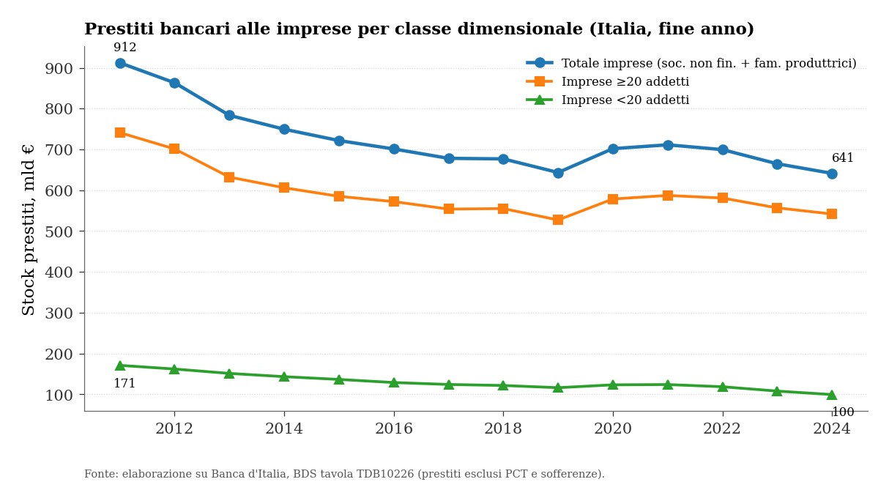
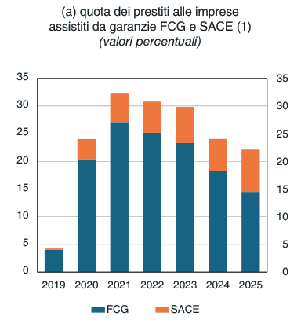

Molte, piccole, sottofinanziate: il credito alle microimprese
Perché il 99% delle imprese riceve il 15% del credito, e cosa lo spiega
Paolo Volterra ![]()
Le micro e piccole imprese sono circa il 99% delle imprese italiane ma ricevono poco più del 15% del credito bancario alle imprese. Questo studio ricostruisce l’asimmetria su dati primari (Banca d’Italia BDS e Relazione annuale 2025, ISTAT) e ne cerca la spiegazione. Il sotto- finanziamento delle microimprese non è primariamente un difetto correggibile dal lato delle garanzie pubbliche — che coprono una minoranza decrescente del credito — ma l’esito strutturale dell’economia del piccolo prestito: operazioni numerose e minuscole su cui il costo fisso di istruttoria, l’opacità informativa e la debolezza del collaterale rendono il credito poco remunerativo. La contrazione del credito, più intensa per le imprese minori (-42% dal 2011), discende da questa economia sfavorevole prima che da scelte discrezionali delle banche.
microimprese, credito bancario, razionamento, costo fisso istruttoria, opacità informativa, relationship lending
1 L’asimmetria di partenza
Le microimprese sono il cuore numerico del sistema produttivo italiano e, al tempo stesso, la sua periferia creditizia.
- Le microimprese sotto i dieci addetti sono circa il 95% delle imprese attive; con le piccole si supera il 99% — fonte: ISTAT, Structural Business Statistics (registro imprese, 2021).
- Eppure le imprese sotto i venti addetti ricevono solo il 15,5% del credito bancario alle imprese (100 miliardi su 641, a dicembre 2024) — fonte: Banca d’Italia, BDS tavola TDB10226 (nostra elaborazione, aggregati SBI33 e SBI25).
- Contribuiscono al 18% del valore aggiunto ma al 41% dell’occupazione delle imprese: molto lavoro, poco valore per addetto — fonte: McKinsey Global Institute (2024), dati 2019.
Il numero e il volume raccontano storie opposte, e la distanza tra le due è il punto di partenza di questo studio: le microimprese sono tantissime e minuscole, e il credito segue il volume, non la testa.
2 La contrazione colpisce di più i più piccoli
Ricostruiamo la serie dei prestiti alle imprese per classe dimensionale dai dati Banca d’Italia (BDS, tavola TDB10226; prestiti al netto di PCT e sofferenze), a fine anno.

Prestiti bancari alle imprese per classe dimensionale, Italia, fine anno. Elaborazione su Banca d’Italia, BDS TDB10226.
- Il credito alle imprese sotto i venti addetti è sceso da 171 miliardi (2011) a 100 miliardi (2024): -41,8% — fonte: Banca d’Italia, BDS TDB10226 (aggregato SBI33).
- Nello stesso periodo il totale delle imprese è calato del -29,7% (da 912 a 641 miliardi): la caduta dei più piccoli è di circa dodici punti più profonda — fonte: Banca d’Italia, BDS TDB10226 (aggregato SBI25).
- La serie, aggiornata al 2024, prolunga di un anno le elaborazioni di settore ferme al 2023: la contrazione è proseguita, non si è stabilizzata — fonte: nostra estrazione.
La domanda non è se le microimprese ricevano meno credito — è un fatto — ma perché la loro quota sia così bassa e la loro contrazione così profonda.
3 L’economia del piccolo prestito
La risposta non è discrezionale ma strutturale: il prestito alla microimpresa è, per costruzione, meno conveniente per la banca. Quattro meccanismi, documentati, convergono.
- Costo fisso di istruttoria. Raccogliere informazioni, valutare le garanzie, deliberare costa in misura largamente indipendente dall’importo. Su un prestito piccolo questo costo erode l’intero margine atteso: i piccoli prestiti sono sistematicamente meno redditizi — meccanismo confermato dall’evidenza che gli standard più stretti verso le micro vengono applicati soprattutto da banche con difficoltà a finanziare imprese ad alti costi fissi su volumi bassi (fonte: letteratura su credito e dimensione d’impresa post-2008).
- Opacità informativa. Bilanci semplificati, contabilità meno standardizzata, assenza di rating pubblici rendono lo screening costoso e il razionamento più probabile per i prenditori più piccoli e opachi — fonte: Credit rationing and relationship lending. Does firm size matter? (Journal of Banking & Finance, 2015).
- Collaterale reale poco efficace. In Italia i tempi di escussione sono tra i più lunghi delle economie avanzate (fino a circa 120 settimane), il che riduce il valore del collaterale e aumenta la perdita attesa in caso di default — fonte: OCSE, ECO/WKP(2021)44.
- Razionamento sull’importo, non solo sul sì/no. Le banche gestiscono la selezione avversa concedendo importi inferiori al richiesto più che negando del tutto: il razionamento è graduale e colpisce di più chi domanda poco — fonte: letteratura sul loan size rationing.
Ne discende una lettura precisa della contrazione: le microimprese cadono più delle altre non (solo) per una scelta delle banche, ma perché partono da un’economia del prestito sfavorevole, che ogni inasprimento del ciclo o della regolazione amplifica per prime.
4 Un circolo che si autoalimenta
La debolezza creditizia e la debolezza strutturale delle micro si rinforzano a vicenda.
- La bassa produttività (18% del valore contro 41% dell’occupazione) comprime i margini e la capacità di autofinanziamento, aumentando la dipendenza dal credito bancario proprio nel segmento meno bancabile — fonte: McKinsey Global Institute (2024).
- La struttura finanziaria delle micro è sottocapitalizzata e sbilanciata verso il debito a breve, il che riduce le garanzie disponibili e la resilienza agli shock — fonte: struttura finanziaria delle imprese (Cerved, A2.9; cfr. dati regionali di bilancio).
- Il credito che le micro ottengono è in prevalenza orientato alla liquidità corrente più che all’investimento: una relazione creditizia difensiva, che non costruisce la storia di credito su cui si fondano condizioni migliori — fonte: indagini congiunturali sul terziario.
Il risultato è un equilibrio di sotto-finanziamento stabile: piccole, opache, poco capitalizzate, quindi costose da finanziare, quindi finanziate poco, quindi ancora più fragili.
5 Le garanzie pubbliche coprono una minoranza (e calante)
Le garanzie pubbliche sono spesso presentate come la leva risolutiva. I dati ne ridimensionano il ruolo: coprono una parte minoritaria e decrescente del credito.
- La quota di prestiti alle imprese assistiti da garanzie pubbliche (Fondo di Garanzia e SACE) ha toccato il picco di circa il 32% nel 2021, per scendere a circa il 22% nel 2025; il solo Fondo di Garanzia è passato dal 27% al 14,5% — fonte: Banca d’Italia, Relazione annuale 2025 (elaborazioni su AnaCredit, prestiti in bonis).

Quota dei prestiti alle imprese assistiti da garanzie FCG e SACE. Banca d’Italia, Relazione annuale 2025 (AnaCredit).
Il grosso del credito alle imprese — circa il 78% nel 2025 — è credito di mercato non garantito. Il razionamento delle microimprese si gioca quindi soprattutto nel mercato ordinario, dove agisce l’economia del piccolo prestito, non nello strumento pubblico. La garanzia attenua un sintomo di accesso per una frazione delle imprese; non modifica il costo fisso di istruttoria né l’opacità che stanno alla radice.
6 Cosa dice, e cosa non dice, questo quadro
- La quota di credito delle microimprese non è un termometro di equità ma il riflesso di un’aritmetica: 99% delle imprese, 15% del credito, perché il loro fabbisogno è fatto di operazioni numerose e minuscole. Confondere numero e volume è la principale fonte di equivoci nella pubblicistica di settore.
- La contrazione più profonda dei più piccoli (-42%) è coerente con l’economia del piccolo prestito che li penalizza per prima; i dati aggregati non consentono di separare la quota dovuta a minore domanda da quella dovuta a minore offerta, ma i meccanismi di offerta (costo fisso, opacità, collaterale) sono indipendentemente documentati.
- Le garanzie pubbliche sono una parte minoritaria e calante del quadro: una politica del credito alle micro che voglia incidere sulla causa dovrebbe agire sui costi di valutazione (informazione standardizzata, dati, tecnologia di screening) più che sulla sola copertura del rischio.
7 Nota su fonti e dati
Dati primari: Banca d’Italia, Base Dati Statistica (tavola TDB10226, prestiti per classe dimensionale) e Relazione annuale 2025 (quota di prestiti garantiti, da AnaCredit); ISTAT, Structural Business Statistics (numerosità e produttività per classe dimensionale); McKinsey Global Institute (2024) per valore aggiunto e occupazione; OCSE, ECO/WKP(2021)44 per i tempi delle procedure esecutive. Il quadro teorico sul razionamento per dimensione d’impresa si appoggia alla letteratura su relationship lending e loan size rationing (Journal of Banking & Finance, 2015; Banca d’Italia, Il credito bancario alle piccole imprese: metamorfosi di un modello di intermediazione, WP 1383). Le serie sono riproducibili dalle tavole citate.
Trasparenza sull’uso dell’intelligenza artificiale
L’uso di strumenti di intelligenza artificiale generativa è dichiarato esplicitamente in quanto parte del processo di lavoro seguito nella redazione del presente documento. Tali strumenti sono stati impiegati a supporto della lettura, della sintesi, della riorganizzazione argomentativa e della revisione testuale, sempre nell’ambito di un processo pienamente controllato dall’autore.
La responsabilità per le fonti utilizzate, le analisi condotte, le verifiche effettuate, le interpretazioni proposte e le conclusioni formulate resta interamente in capo all’autore.
L’intelligenza artificiale è stata utilizzata come ambiente di supporto cognitivo ed editoriale, non come fonte primaria, autore autonomo o sostituto del giudizio critico.